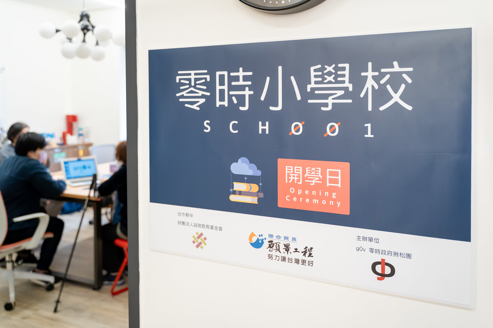

<!DOCTYPE html><html lang="zh-Hant-TW"><head><!-- Global site tag (gtag.js) - Google Analytics --><script async="async" src="https://www.googletagmanager.com/gtag/js?id=UA-157922148-1"></script><script>window.dataLayer = window.dataLayer || [];
function gtag(){dataLayer.push(arguments);}
gtag('js', new Date());
gtag('config', 'UA-157922148-1');
</script><meta charset="UTF-8"/><meta name="viewport" content="width=device-width, initial-scale=1.0"/><meta http-equiv="X-UA-Compatible" content="ie=edge"/><meta property="og:title" content="sch001 零時小學校"/><meta property="og:image" content="/assets/img/main_1920x1080.png"/><base href="/"/><title>sch001 零時小學校</title><link rel="shortcut icon" type="image/x-icon" href="/assets/g0v.ico"/><link rel="stylesheet" href="https://stackpath.bootstrapcdn.com/bootstrap/4.4.1/css/bootstrap.min.css" integrity="sha384-Vkoo8x4CGsO3+Hhxv8T/Q5PaXtkKtu6ug5TOeNV6gBiFeWPGFN9MuhOf23Q9Ifjh" crossorigin="anonymous"/><link href="https://fonts.googleapis.com/css?family=Noto+Sans+TC&amp;display=swap" rel="stylesheet"/><link href="https://unpkg.com/aos@2.3.1/dist/aos.css" rel="stylesheet"/></head><link rel="stylesheet" href="../styles/power.css"/></html><body><div id="header-img"></div><div class="container-fluid p-4" id="intros"><div class="row justify-content-center"><div class="col-11 col-lg-8"><div class="container"><h3>零時小學校（Sch001）2020 成果列表</h3><p>「教育科技（EdTech）」是透過創新科技方法和策略，幫助學習者學到更多知識。為了激發更多創新的公民科技專案，讓更多知識開放在公共領域，成為跨世代、跨媒介的教育資源，以及公民思辨的重要素材，g0v 揪松團以「教育」作為 2020 年的主題，透過「g0v 黑客松」和「零時小學校」，號召不同領域的知識愛好者，運用資訊科技、分析問題、協作分工，促使更多教育專案有機會邁向標準化、數位化與服務化發展，讓知識在社群活起來。</p><p>g0v 揪松團與誠致教育基金會、聯合報系願景工程合作，自 2019 年底開始籌備「零時小學校（Sch001）」專案，並在 2020 年串連國內外十餘個關注教育的單位或社群，邀請 8 位講師，在 7 次線上／線下的工作坊和黑客松累積 21 件教育科技提案，並在八月底舉辦「零時小學校競賽日（Sch001 Demo Day）」，由百位參與者共同見證首屆獲獎團隊的誕生，共 6 組獲獎團隊將成果開源釋出。</p><p>「零時小學校競賽日（Sch001 Demo Day）」評選委員選出 5 組獲獎團隊：「幸福存摺」、「繁體中文 CC0 句庫」、「島島阿學教育資源平台」、「CoTeach 教案共享平臺（原名：Plan Hub）」和「CBFHSS 專為高中生設計的管家型聊天機器人」；零時小學校合作夥伴「誠致教育基金會」頒發「識字量檢測特別獎」給「識字題庫」。</p><div class="text-center"><a class="btn btn-primary" href="/" role="button">看更多零時小學校介紹</a></div></div><hr/><div class="row justify-content-center" id="team-area"><div class="p-2 col-11 col-lg-4"><div class="p-4 team-block h-100"><a class="team-modal" href="/power/#" data-toggle="modal" data-target="#teamModal0" data-teamid="0"><div class="container-fluid team-img" style="background-image: url('../assets/img/happybank.png')"></div></a><hr/><h3 class="text-center">幸福存摺</h3><p>設計給非營利事業組織兒少陪伴單位的電子獎勵系統，讓孩子們透過執行任務獲得點數，累積的點數可向機構換取獎品或是客製化的需求（例如：修鞋，修車）。</p></div></div><div class="p-2 col-11 col-lg-4"><div class="p-4 team-block h-100"><a class="team-modal" href="/power/#" data-toggle="modal" data-target="#teamModal1" data-teamid="1"><div class="container-fluid team-img" style="background-image: url('../assets/img/cc0.png')"></div></a><hr/><h3 class="text-center">CC0 繁體中文句庫</h3><p>搜集整理無版權限制的繁體中文句子，建立CC0授權、不限定任何用途的資料庫，作為中文相關專案的基礎建設</p></div></div><div class="p-2 col-11 col-lg-4"><div class="p-4 team-block h-100"><a class="team-modal" href="/power/#" data-toggle="modal" data-target="#teamModal2" data-teamid="2"><div class="container-fluid team-img" style="background-image: url('../assets/img/coteach.jpeg')"></div></a><hr/><h3 class="text-center">CoTeach</h3><p>提供教師分享其設計的教案，促進教師間的經驗交流，亦可建置個人教學記錄，就像是工程師使用的程式碼管理平臺 GitHub，讓好的資源能在社群內共享協作，且能不斷迭代更新。</p></div></div><div class="p-2 col-11 col-lg-4"><div class="p-4 team-block h-100"><a class="team-modal" href="/power/#" data-toggle="modal" data-target="#teamModal3" data-teamid="3"><div class="container-fluid team-img" style="background-image: url('../assets/img/cbfhss.png')"></div></a><hr/><h3 class="text-center">CBFHSS</h3><p>CBFHSS 為以高中生生活出發所研發之聊天機器人，目的在於分攤學生一日校園生活的負擔。</p></div></div><div class="p-2 col-11 col-lg-4"><div class="p-4 team-block h-100"><a class="team-modal" href="/power/#" data-toggle="modal" data-target="#teamModal4" data-teamid="4"><div class="container-fluid team-img" style="background-image: url('../assets/img/lt.png')"></div></a><hr/><h3 class="text-center">識字題庫</h3><p>以機器產生題目並網羅各政府機關提供的識字題目。以萌典結構化資料為基礎，建立供教師、開發者使用，開放授權的識字量題庫。</p></div></div><div class="p-2 col-11 col-lg-4"><div class="p-4 team-block h-100"><a class="team-modal" href="/power/#" data-toggle="modal" data-target="#teamModal5" data-teamid="5"><div class="container-fluid team-img" style="background-image: url('../assets/img/daodao.jpeg')"></div></a><hr/><h3 class="text-center">島島阿學</h3><p>島島阿學」提供可共編的學習資源整合服務，透過建立學習資源網絡，進而成為自己想成為的人，並從中培養共好精神。</p></div></div></div><div class="modal fade" id="teamModal0" tabindex="-1" role="dialog" aria-labelledby="teamModalLabel" aria-hidden="true"><div class="modal-dialog modal-xl" role="document"><div class="modal-content"><div class="modal-header"><button class="close" type="button" data-dismiss="modal" aria-label="Close"><span aria-hidden="true">&times;</span></button></div><div class="modal-body"><div class="row justify-content-center"><div class="col-11 col-lg-5 team-img" style="background-image: url('../assets/img/happybank.png')"></div><div class="col-11 col-lg-5 team-disc p-4"><h3>幸福存摺</h3><p>設計給非營利事業組織兒少陪伴單位的電子獎勵系統，讓孩子們透過執行任務獲得點數，累積的點數可向機構換取獎品或是客製化的需求（例如：修鞋，修車）。</p></div></div><hr/><div class="row justify-content-center"><div class="col-11"><h3>團隊成員</h3><p class="team-members"></p><h3>專案開源</h3><p class="team-opensource"></p></div></div></div></div></div></div><div class="modal fade" id="teamModal1" tabindex="-1" role="dialog" aria-labelledby="teamModalLabel" aria-hidden="true"><div class="modal-dialog modal-xl" role="document"><div class="modal-content"><div class="modal-header"><button class="close" type="button" data-dismiss="modal" aria-label="Close"><span aria-hidden="true">&times;</span></button></div><div class="modal-body"><div class="row justify-content-center"><div class="col-11 col-lg-5 team-img" style="background-image: url('../assets/img/cc0.png')"></div><div class="col-11 col-lg-5 team-disc p-4"><h3>CC0 繁體中文句庫</h3><p>搜集整理無版權限制的繁體中文句子，建立CC0授權、不限定任何用途的資料庫，作為中文相關專案的基礎建設</p></div></div><hr/><div class="row justify-content-center"><div class="col-11"><h3>團隊成員</h3><p class="team-members"></p><h3>專案開源</h3><p class="team-opensource"></p></div></div></div></div></div></div><div class="modal fade" id="teamModal2" tabindex="-1" role="dialog" aria-labelledby="teamModalLabel" aria-hidden="true"><div class="modal-dialog modal-xl" role="document"><div class="modal-content"><div class="modal-header"><button class="close" type="button" data-dismiss="modal" aria-label="Close"><span aria-hidden="true">&times;</span></button></div><div class="modal-body"><div class="row justify-content-center"><div class="col-11 col-lg-5 team-img" style="background-image: url('../assets/img/coteach.jpeg')"></div><div class="col-11 col-lg-5 team-disc p-4"><h3>CoTeach</h3><p>提供教師分享其設計的教案，促進教師間的經驗交流，亦可建置個人教學記錄，就像是工程師使用的程式碼管理平臺 GitHub，讓好的資源能在社群內共享協作，且能不斷迭代更新。</p></div></div><hr/><div class="row justify-content-center"><div class="col-11"><h3>團隊成員</h3><p class="team-members"></p><h3>專案開源</h3><p class="team-opensource"></p></div></div></div></div></div></div><div class="modal fade" id="teamModal3" tabindex="-1" role="dialog" aria-labelledby="teamModalLabel" aria-hidden="true"><div class="modal-dialog modal-xl" role="document"><div class="modal-content"><div class="modal-header"><button class="close" type="button" data-dismiss="modal" aria-label="Close"><span aria-hidden="true">&times;</span></button></div><div class="modal-body"><div class="row justify-content-center"><div class="col-11 col-lg-5 team-img" style="background-image: url('../assets/img/cbfhss.png')"></div><div class="col-11 col-lg-5 team-disc p-4"><h3>CBFHSS</h3><p>CBFHSS 為以高中生生活出發所研發之聊天機器人，目的在於分攤學生一日校園生活的負擔。</p></div></div><hr/><div class="row justify-content-center"><div class="col-11"><h3>團隊成員</h3><p class="team-members"></p><h3>專案開源</h3><p class="team-opensource"></p></div></div></div></div></div></div><div class="modal fade" id="teamModal4" tabindex="-1" role="dialog" aria-labelledby="teamModalLabel" aria-hidden="true"><div class="modal-dialog modal-xl" role="document"><div class="modal-content"><div class="modal-header"><button class="close" type="button" data-dismiss="modal" aria-label="Close"><span aria-hidden="true">&times;</span></button></div><div class="modal-body"><div class="row justify-content-center"><div class="col-11 col-lg-5 team-img" style="background-image: url('../assets/img/lt.png')"></div><div class="col-11 col-lg-5 team-disc p-4"><h3>識字題庫</h3><p>以機器產生題目並網羅各政府機關提供的識字題目。以萌典結構化資料為基礎，建立供教師、開發者使用，開放授權的識字量題庫。</p></div></div><hr/><div class="row justify-content-center"><div class="col-11"><h3>團隊成員</h3><p class="team-members"></p><h3>專案開源</h3><p class="team-opensource"></p></div></div></div></div></div></div><div class="modal fade" id="teamModal5" tabindex="-1" role="dialog" aria-labelledby="teamModalLabel" aria-hidden="true"><div class="modal-dialog modal-xl" role="document"><div class="modal-content"><div class="modal-header"><button class="close" type="button" data-dismiss="modal" aria-label="Close"><span aria-hidden="true">&times;</span></button></div><div class="modal-body"><div class="row justify-content-center"><div class="col-11 col-lg-5 team-img" style="background-image: url('../assets/img/daodao.jpeg')"></div><div class="col-11 col-lg-5 team-disc p-4"><h3>島島阿學</h3><p>島島阿學」提供可共編的學習資源整合服務，透過建立學習資源網絡，進而成為自己想成為的人，並從中培養共好精神。</p></div></div><hr/><div class="row justify-content-center"><div class="col-11"><h3>團隊成員</h3><p class="team-members"></p><h3>專案開源</h3><p class="team-opensource"></p></div></div></div></div></div></div><hr/><div class="text-center"><a class="btn btn-primary" href="https://sch001.g0v.tw/dash/brd/sch001/list" role="button">看更多零時小學校提案</a></div></div></div></div><div class="container-fluid p-4" id="courses" data-showed="false"><div class="row justify-content-center align-items-center"><div class="col-11 col-lg-5"><div class="carousel slide" id="carouselIndicators" data-ride="carousel"><ol class="carousel-indicators"><li class="active" data-target="#carouselIndicators" data-slide-to="0"></li><li data-target="#carouselIndicators" data-slide-to="1"></li><li data-target="#carouselIndicators" data-slide-to="2"></li></ol><div class="carousel-inner"><div class="carousel-item active"></div><div class="carousel-item"></div><div class="carousel-item"></div></div><a class="carousel-control-prev" href="#carouselIndicators" role="button" data-slide="prev"><span class="carousel-control-prev-icon" aria-hidden="true"></span><span class="sr-only">Previous</span></a><a class="carousel-control-next" href="#carouselIndicators" role="button" data-slide="next"><span class="carousel-control-next-icon" aria-hidden="true"></span><span class="sr-only">Next</span></a></div></div><div class="col-11 col-lg-5 offset-lg-1 p-4" id="courselist"><p><span class="animatenumbers" data-targetnum="7">0</span>次每月聚會</p><p><span class="animatenumbers" data-targetnum="8">0</span>位講師</p><p><span class="animatenumbers" data-targetnum="13">0</span>個國內外關注教育的單位或社群</p><p><span class="animatenumbers" data-targetnum="21">0</span>件工作坊提案</p><p><span class="animatenumbers" data-targetnum="24">0</span>件 Demo Day 提案</p></div></div></div><div class="container-fluid p-4" id="mediareports"><div class="row justify-content-center"><div class="col-11 col-lg-8"><h3>媒體報導</h3><div class="row"><div class="p-2 col-11 col-lg-4"><div class="p-4 team-block h-100"></div></div></div></div></div></div><script src="https://code.jquery.com/jquery-3.5.1.min.js" integrity="sha256-9/aliU8dGd2tb6OSsuzixeV4y/faTqgFtohetphbbj0=" crossorigin="anonymous"></script>
<script src="https://cdn.jsdelivr.net/npm/popper.js@1.16.1/dist/umd/popper.min.js" integrity="sha384-9/reFTGAW83EW2RDu2S0VKaIzap3H66lZH81PoYlFhbGU+6BZp6G7niu735Sk7lN" crossorigin="anonymous"></script>
<script src="https://stackpath.bootstrapcdn.com/bootstrap/4.5.2/js/bootstrap.min.js" integrity="sha384-B4gt1jrGC7Jh4AgTPSdUtOBvfO8shuf57BaghqFfPlYxofvL8/KUEfYiJOMMV+rV" crossorigin="anonymous"></script><script>function runNums(target, targetNum, curNum) {
    $(target).text(curNum);
    if (targetNum > curNum) {
        curNum++;
        setTimeout(function() {
            runNums(target, targetNum, curNum)
        }, 30);
    }
}

$(window).scroll(function(){
    if($(window).scrollTop() + window.innerHeight > $("#courses").offset().top + $("#courses").height()/2 && $("#courses").data("showed") == false){
        $("#courses").data("showed", true);
        var animNumDoms = $(".animatenumbers");
        animNumDoms.each(function(index){
           var targetNum = $(this).data("targetnum");
           runNums(`.animatenumbers[data-targetnum=${targetNum}]`, targetNum, 0);
        });
    }
});</script></body>